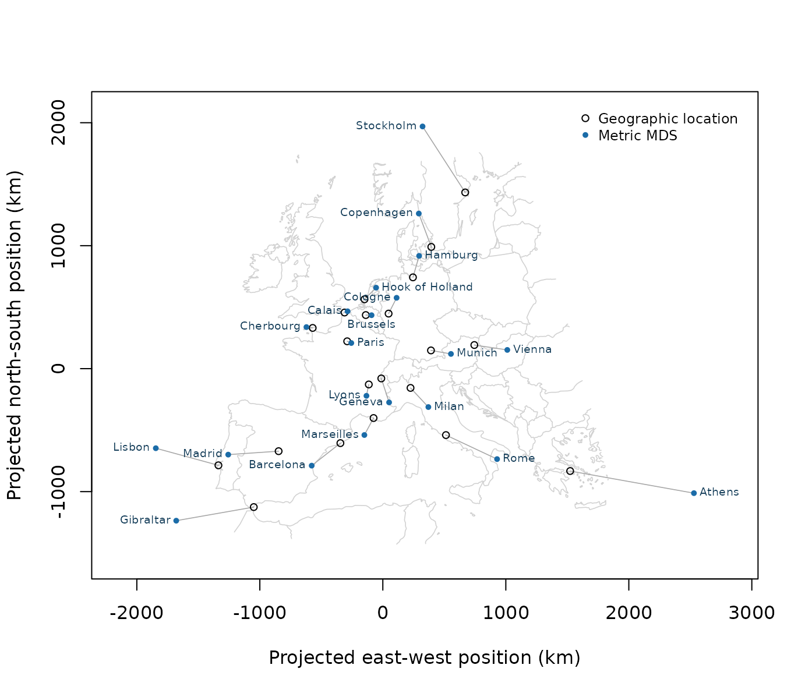

Can an optimizer recover a recognizable map of Europe from a table of
road distances? We will use that problem to explore three parts of the
mize callback interface: capturing fixed data in a closure,
checking an analytic gradient, and sharing intermediate calculations
between the objective and gradient.
datasets::eurodist contains road distances in kilometres
among 21 European cities. We will fit a two-dimensional configuration
whose Euclidean distances approximate those values. Roads need not
follow straight lines, and the cities lie on the curved surface of the
Earth, so some disagreement is inevitable.
This example minimizes raw stress directly.
stats::cmdscale() follows the classical-scaling route and
uses a different criterion.
Stress and its gradient
Let \(R = (r_{ij})\) be the target distances and let \(D = (d_{ij})\) be the Euclidean distances among candidate coordinates \(Y\). We minimize raw stress:
\[ C(Y) = \sum_{i < j} (r_{ij} - d_{ij})^2. \]
The condition \(i < j\) counts each unordered pair once. The matrix implementation below instead sums both symmetric triangles, so it multiplies that sum by one half. With \(n\) objects, the corresponding distance RMSE is \(\sqrt{C / {n \choose 2}}\) and has the same units as the input distances.
For distinct points, the derivative with respect to the coordinates of object \(i\) is
\[ \frac{\partial C}{\partial \mathbf{y}_i} = -2 \sum_{j \ne i} \frac{r_{ij} - d_{ij}}{d_{ij}} (\mathbf{y}_i - \mathbf{y}_j). \]
Implementation note. Euclidean distance is nondifferentiable when two candidate points coincide.
distance_epsilonprevents division by zero in the code, although the mathematical derivative remains undefined at an exactly coincident configuration. The gradient check therefore uses a seeded, nondegenerate point.
The callback factory captures the fixed target matrix in a closure.
Its prepare() helper performs the shared conversion from a
parameter vector to coordinates and pairwise distances. A counter
records how often that work is performed.
distance_epsilon <- 1e-10
make_mmds_callbacks <- function(
distances,
combined = FALSE,
epsilon = distance_epsilon
) {
target <- as.matrix(distances)
preparation_count <- 0L
prepare <- function(par) {
preparation_count <<- preparation_count + 1L
coordinates <- matrix(par, ncol = 2, byrow = TRUE)
list(
coordinates = coordinates,
distances = as.matrix(stats::dist(coordinates))
)
}
stress <- function(prepared) {
0.5 * sum((target - prepared$distances)^2)
}
gradient <- function(prepared) {
weights <- (target - prepared$distances) /
(prepared$distances + epsilon)
coordinates <- prepared$coordinates
result <- matrix(
nrow = nrow(coordinates),
ncol = ncol(coordinates)
)
for (i in seq_len(nrow(coordinates))) {
differences <- sweep(-coordinates, 2, -coordinates[i, ])
result[i, ] <- colSums(differences * weights[, i])
}
as.vector(t(result)) * -2
}
callbacks <- list(
fn = function(par) stress(prepare(par)),
gr = function(par) gradient(prepare(par))
)
if (combined) {
callbacks$fg <- function(par) {
prepared <- prepare(par)
list(
fn = stress(prepared),
gr = gradient(prepared)
)
}
}
list(
fg = callbacks,
preparations = function() preparation_count,
reset_preparations = function() {
preparation_count <<- 0L
invisible(NULL)
}
)
}The separate variant supplies fn and gr.
The combined variant also supplies fg, which lets
mize request an objective and gradient from one prepared
configuration.
Validate the gradient
check_mize_gradient() compares the analytic gradient
with central finite differences. Because the combined callback is
present, it also checks that fg agrees with the separate
fn and gr callbacks.
gradient_check <- check_mize_gradient(
combined_callbacks$fg,
initial_par
)
gradient_summary <- data.frame(
max_abs_error = gradient_check$max_abs_error,
max_rel_error = gradient_check$max_rel_error,
fg_fn_abs_error = gradient_check$fg_consistency$fn$abs_error,
fg_gr_max_abs_error =
gradient_check$fg_consistency$gr$max_abs_error
)
knitr::kable(
signif(gradient_summary, digits = 4),
row.names = FALSE,
col.names = c(
"Maximum absolute error",
"Maximum relative error",
"fg/fn absolute error",
"fg/gr maximum absolute error"
)
)| Maximum absolute error | Maximum relative error | fg/fn absolute error | fg/gr maximum absolute error |
|---|---|---|---|
| 0.008302 | 1.7e-06 | 0 | 0 |
The analytic gradient agrees with the finite-difference approximation to about 1.7e-06 in relative terms. At the checked point, the combined callback also reproduces the separate objective and gradient to the displayed precision.
Optimize with separate and combined callbacks
For this example, we stop when the relative change in stress falls below \(10^{-8}\). Stress depends on the scale of the supplied distances, which makes a relative criterion convenient here. The Convergence article discusses the other controls.
mmds_controls <- list(
method = "L-BFGS",
max_iter = 200,
abs_tol = NULL,
rel_tol = 1e-8,
grad_tol = NULL,
step_tol = NULL
)
separate_callbacks$reset_preparations()
combined_callbacks$reset_preparations()
separate_result <- do.call(
mize,
c(
list(par = initial_par, fg = separate_callbacks$fg),
mmds_controls
)
)
combined_result <- do.call(
mize,
c(
list(par = initial_par, fg = combined_callbacks$fg),
mmds_controls
)
)
results <- list(
separate = separate_result,
combined = combined_result
)
initial_stress <- gradient_check$fn
pair_count <- choose(attr(target_distances, "Size"), 2)
preparation_counts <- c(
separate = separate_callbacks$preparations(),
combined = combined_callbacks$preparations()
)
initial_rmse_km <- sqrt(initial_stress / pair_count)
final_rmse_km <- sqrt(combined_result$f / pair_count)
callback_comparison <- data.frame(
callbacks = c("separate fn/gr", "combined fg"),
iterations = vapply(results, `[[`, numeric(1), "iter"),
objective_calls = vapply(results, `[[`, numeric(1), "nf"),
gradient_calls = vapply(results, `[[`, numeric(1), "ng"),
distance_preparations = unname(preparation_counts),
check.names = FALSE
)
knitr::kable(
callback_comparison,
row.names = FALSE,
col.names = c(
"Callbacks",
"Iterations",
"Objective calls",
"Gradient calls",
"Distance preparations"
)
)| Callbacks | Iterations | Objective calls | Gradient calls | Distance preparations |
|---|---|---|---|---|
| separate fn/gr | 37 | 57 | 57 | 114 |
| combined fg | 37 | 57 | 57 | 58 |
Both callback forms converge on rel_tol from the fixed
starting point and return the same configuration. They take 37
iterations and reduce pairwise-distance RMSE from 1,750 km to 126
km.
mize requests the same logical information in both runs.
The combined callback performs 58 distance-matrix preparations instead
of 114 because a joint request can reuse one prepared configuration. On
this small problem, that deterministic count is more informative than a
wall-clock comparison. Exact callback totals may change with line-search
details.
Raw stress is nonconvex, so this seeded run demonstrates a reproducible fit without claiming that it found the global minimum.
Put the configuration on the map
The fitted configuration may initially look sideways or mirrored. Stress depends only on pairwise distances, so translating, rotating, or reflecting every point produces an equally good solution. Metric MDS recovers an approximate distance geometry, while its origin, compass direction, and handedness remain undetermined.
For a familiar frame of reference, we project approximate city-centre locations onto a plane measured in kilometres, then find the translated, rotated, or reflected copy of the fitted configuration that lies closest to them. The alignment uses an orthogonal transformation and leaves the scale fixed. Consequently, it preserves every fitted distance and the raw stress.
Show the projection and alignment code
city_names <- labels(target_distances)
# Approximate city-centre coordinates based on maps::world.cities (maps 3.4.3),
# with the historical eurodist names retained and Hook of Holland added.
city_locations <- data.frame(
city = city_names,
longitude = c(
23.73, 2.17, 4.33, 1.86, -1.63, 6.97, 12.57,
6.14, -5.35, 10.00, 4.13, -9.14, 4.83, -3.71,
5.37, 9.19, 11.58, 2.34, 12.50, 18.07, 16.37
),
latitude = c(
37.98, 41.40, 50.83, 50.95, 49.64, 50.95, 55.68,
46.21, 36.14, 53.55, 51.98, 38.72, 45.76, 40.42,
43.31, 45.48, 48.14, 48.86, 41.89, 59.33, 48.22
)
)
project_azimuthal_equidistant <- function(
longitude,
latitude,
center_longitude,
center_latitude,
radius_km = 6371.0088
) {
to_radians <- pi / 180
lambda <- longitude * to_radians
phi <- latitude * to_radians
lambda0 <- center_longitude * to_radians
phi0 <- center_latitude * to_radians
delta_lambda <- lambda - lambda0
cos_angle <-
sin(phi0) * sin(phi) +
cos(phi0) * cos(phi) * cos(delta_lambda)
cos_angle <- pmax(-1, pmin(1, cos_angle))
angle <- acos(cos_angle)
projection_scale <- rep(1, length(angle))
nonzero <- is.finite(angle) &
abs(angle) > sqrt(.Machine$double.eps)
projection_scale[nonzero] <-
angle[nonzero] / sin(angle[nonzero])
cbind(
east_km =
radius_km *
projection_scale *
cos(phi) *
sin(delta_lambda),
north_km =
radius_km *
projection_scale *
(
cos(phi0) * sin(phi) -
sin(phi0) * cos(phi) * cos(delta_lambda)
)
)
}
rigid_align <- function(configuration, reference) {
configuration_center <- colMeans(configuration)
reference_center <- colMeans(reference)
x <- sweep(configuration, 2, configuration_center)
y <- sweep(reference, 2, reference_center)
decomposition <- svd(crossprod(x, y))
orthogonal <- decomposition$u %*% t(decomposition$v)
list(
coordinates = sweep(
x %*% orthogonal,
2,
reference_center,
"+"
),
orthogonal = orthogonal
)
}
projection_center <- c(
mean(city_locations$longitude),
mean(city_locations$latitude)
)
geographic_coordinates <- project_azimuthal_equidistant(
city_locations$longitude,
city_locations$latitude,
center_longitude = projection_center[1],
center_latitude = projection_center[2]
)
mmds_coordinates <- matrix(
combined_result$par,
ncol = 2,
byrow = TRUE
)
alignment <- rigid_align(mmds_coordinates, geographic_coordinates)
aligned_coordinates <- alignment$coordinates
europe <- maps::map(
"world",
plot = FALSE,
xlim = c(-12, 27),
ylim = c(34, 62)
)
outside_europe <-
europe$x < -12 | europe$x > 27 |
europe$y < 34 | europe$y > 62
europe$x[outside_europe] <- NA_real_
europe$y[outside_europe] <- NA_real_
europe_coordinates <- project_azimuthal_equidistant(
europe$x,
europe$y,
center_longitude = projection_center[1],
center_latitude = projection_center[2]
)
Open circles mark projected geographic locations. Filled points show the metric-MDS configuration after translation, rotation, and possible reflection; grey segments join corresponding cities. No rescaling was applied.
The 126 km pairwise-distance RMSE summarizes how well the configuration fits the road-distance table. The segments in the map answer a second question: how closely does that road-distance geometry resemble projected geography? Their remaining lengths are expected because road routes, coastlines, and the compromise required to fit all 210 city pairs affect the target distances.
The same closure pattern applies whenever callbacks need fixed data
or share an intermediate calculation. For the full callback contract,
see ?mize.
See also
- Getting started introduces callback lists and gradient checks.
- Convergence explains the relative tolerance used here.
- Stateful optimization shows step-by-step integration with retained optimizer state.